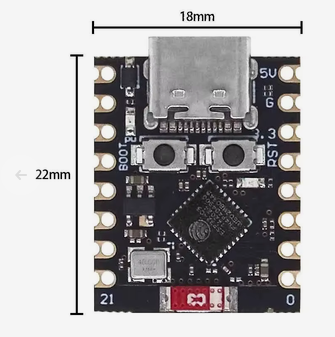
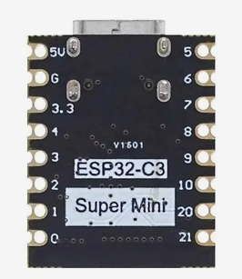

Рабочая ведомость известных деталей. Пометка различает фото продавца, фото реального экземпляра и временный эскиз. Чтобы дополнить карточку, пришлите её ID, фотографии, надписи на детали и ссылку продавца.
12позиций в каталоге
12требуют уточнения
17справочных ссылок
ID
Картинка
Возможные названия компонента
Зачем он нужен
Описание или покупка
cmp-001

ESP32 C3 Mini Plus / SuperMini Plus V2.0

Вид платы с обратной стороны
фото продавца
ESP32 C3 Mini Plus / SuperMini Plus V2.0
ESP32 C3 Mini Plus
ESP32-C3 SuperMini Plus
ESP32 C3 Super mini V2.0
красная плата ESP32 C3 Mini Plus
Основной микроконтроллер. Управляет BLE, PWM подсветки, датчиком освещённости и логикой режима дня/ночи.
Двухканальный токосъёмник передаёт питание на вращающуюся подсветку внутри флагштока. Он не является подшипником и не должен воспринимать механическую нагрузку конструкции.
Выбранный вариант
12.5mm 2CH 5A; соответствует обозначению M125-0205
Каналы и ток
2 канала, заявлено 5 А; допустимый длительный ток на канал нужно проверить на стенде
Диаметр корпуса
12,5 мм по обозначению варианта
Провода
заявленная стандартная длина 150 мм
Условия работы
до 250 об/мин, от −30 до +80 °C, IP51 — заявления продавца
Понижает стабилизированные 12 В системы до 5 В для питания ESP32-C3 и низковольтной периферии. Для выбранной версии 5 В вход 12 В находится внутри заявленного диапазона 6–28 В.
Выбранный вариант
фиксированный выход 5 В; на схеме продавца ему соответствует R1 = 75,0 кОм
Вход
6–28 В для версии с выходом 5 В
Выходной ток
до 4 А длительно, до 5 А кратковременно при хорошем теплоотводе — заявления продавца
Преобразование
синхронный buck, 500 кГц, заявленный КПД 81–94 %
Ток покоя
300–400 мкА — заявление продавца
Размер и масса
примерно 27,5 × 22 × 9 мм, 5 г
Защиты
UVP, OCP, ограничение тока при коротком замыкании, плавный пуск и отключение при перегреве — заявления продавца
аккумуляторный блок 8,4 В для велосипедного фонаря
6-cell 18650 power bank case
Внешний корпус аккумуляторного блока на шесть элементов 18650. По карточке продавца выдаёт до 8,4 В через DC-разъём и 5 В через USB. Для питания Crucian его DC-выход должен проходить через отдельный стабилизатор/преобразователь до требуемых 12 В.
Конфигурация
2, 4 или 6 сменных элементов 18650 (заявление продавца)
Выходы
DC до 8,4 В; USB 5 В до 2,1 А (заявление продавца)
Корпус
чёрный пластик, примерно 87 × 65 × 45 мм, около 200 г, ремешок в комплекте
Ток ожидания
менее 10 мкА (заявление продавца)
Водозащита
в карточке написано «XP7»; это не принято как подтверждённый рейтинг IPX7